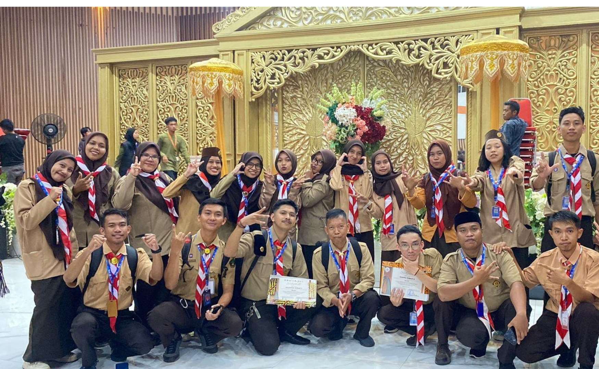
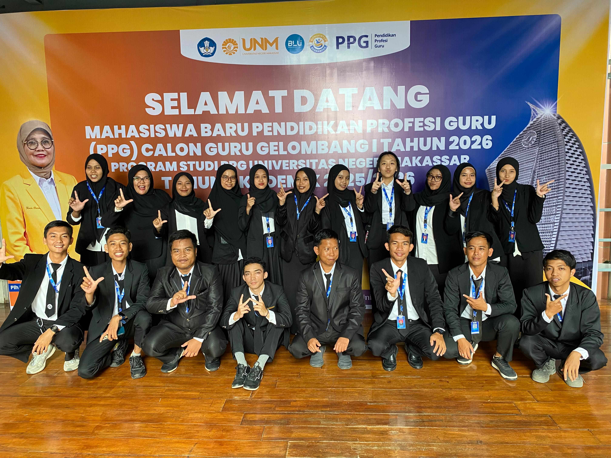
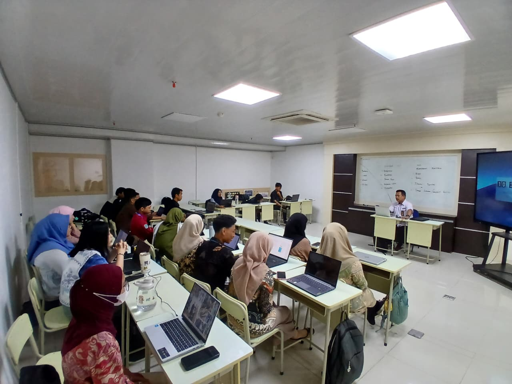
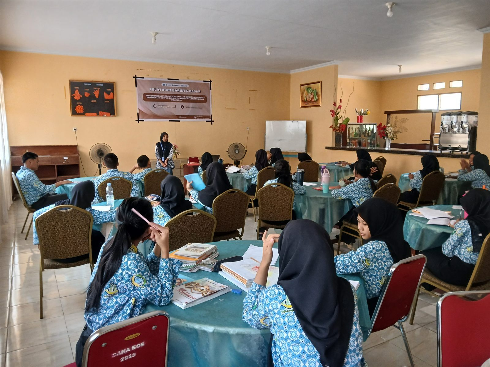
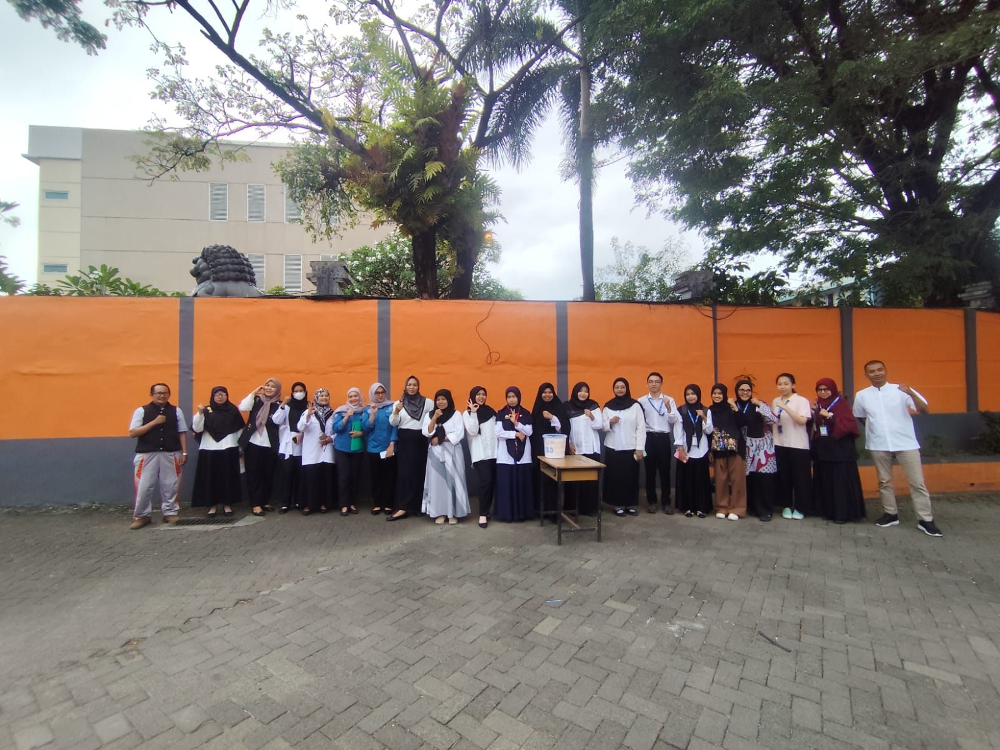
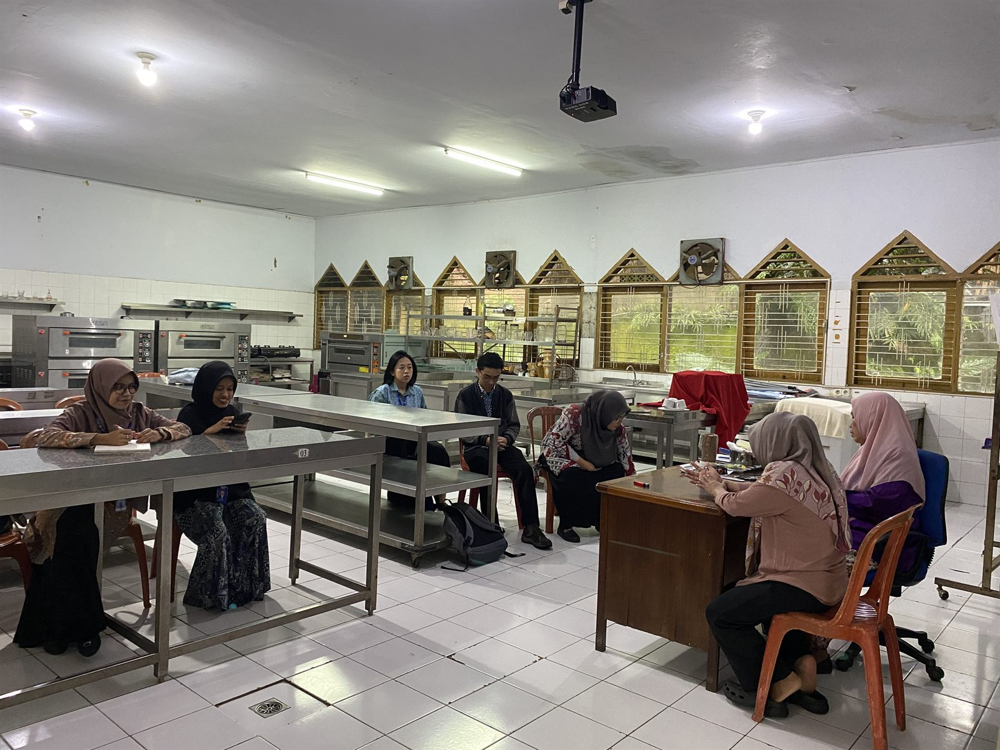
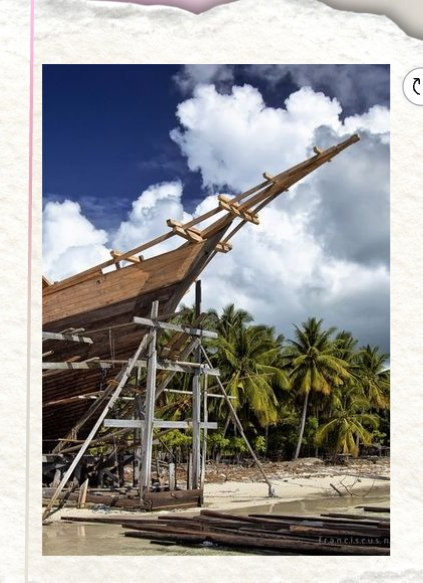
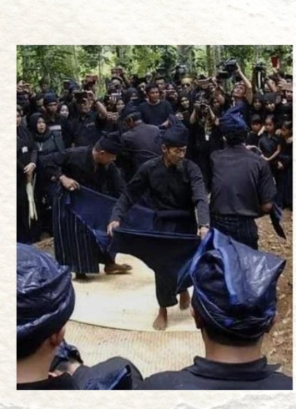
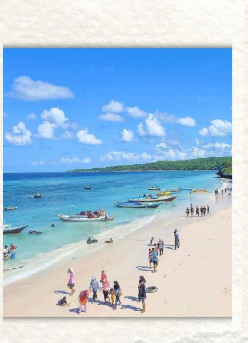

Selamat datang di ruang belajarku,
E-Portfolio Praktik Mengajar Mandiri
Ruang digital yang menampilkan seluruh dokumentasi, analisis, refleksi, serta bukti implementasi pembelajaran selama Praktik Pengalaman Lapangan (PPL) pada Program Pendidikan Profesi Guru (PPG) Calon Guru Gelombang 1 Tahun 2026 di SMK Negeri 6 Makassar, Program Keahlian Kuliner.
- SMK Negeri 6 Makassar
- Universitas Negeri Makassar
Profil Guru
- Nama Lengkap
- Rahmawati Nawir
- Nama Panggilan
- Rahma
- NIM
- 2590494950034
- Tempat, Tanggal Lahir
- Bulukumba, 1 Desember 2000
- Bidang Studi
- Kuliner
- Program
- PPG Calon Guru Gelombang 1 Tahun 2026
- LPTK
- Universitas Negeri Makassar (UNM)
- Sekolah PPL
- SMK Negeri 6 Makassar — Program Keahlian Kuliner
- Guru Pamong
- Prita Bebasari, S.Pd
- Dosen Pembimbing Lapangan
- Dr. Hamidah Suryani, M.Pd
Kampus LPTK — Universitas Negeri Makassar
Jl. A.P. Pettarani, Makassar, Sulawesi Selatan


Universitas Negeri Makassar (UNM) adalah salah satu perguruan tinggi negeri terbesar di Indonesia Timur, yang berlokasi di Jl. A.P. Pettarani, Makassar. UNM memiliki 9 fakultas dan program pascasarjana, yang mencakup bidang pendidikan, saintek, kedokteran, hingga seni dan desain.
Sebagai LPTK (Lembaga Pendidikan Tenaga Kependidikan), UNM menyiapkan mahasiswa menjadi guru profesional melalui program Pendidikan Profesi Guru (PPG) — memadukan teori pedagogi dengan praktik nyata di sekolah.
Sekolah PPL — SMK Negeri 6 Makassar
Jl. Andi Djemma No.132, Banta-Bantaeng, Kec. Rappocini, Makassar


SMK Negeri 6 Makassar (dikenal dengan sebutan Skansix) adalah salah satu Sekolah Menengah Kejuruan Negeri unggulan yang berlokasi di Jl. Andi Djemma No.132, Banta-Bantaeng, Kec. Rappocini, Kota Makassar. Sekolah ini berfokus pada pendidikan vokasi yang membekali siswa dengan keterampilan siap kerja, kewirausahaan, dan sertifikasi profesi.
Asal & Keunikan Daerah — Bulukumba
Bulukumba dikenal dengan julukan "Butta Panrita Lopi" atau Tanah Para Ahli Pembuat Perahu, ujung selatan Sulawesi Selatan. Selain terkenal dengan pembuatan kapal tradisional Pinisi yang telah diakui UNESCO sebagai Warisan Budaya Takbenda, Bulukumba juga memiliki kekayaan budaya yang sangat unik, yaitu Adat Ammatoa di Kajang dengan pakaian serba hitam sebagai simbol kesederhanaan dan kesetaraan.

Perahu Pinisi
Kapal tradisional Buola Beso — dibuat tanpa paku, diakui UNESCO sebagai Warisan Budaya Takbenda Indonesia.

Adat Ammatoa
Masyarakat Kajang dengan pakaian serba hitam sebagai lambang kesederhanaan dan kesetaraan.

Pantai Tanjung Bira
Pantai berpasir putih halus, destinasi unggulan Bulukumba yang ramai dikunjungi wisatawan.
Inspirasi & Tujuan Menjadi Guru
Inspirasi saya menjadi guru tumbuh dari pengalaman menyaksikan bagaimana pendidikan mengubah kehidupan orang-orang di sekitar — guru yang sabar dan kreatif mampu membuka wawasan siswa, bahkan di daerah yang tantangannya besar. Ketekunan dan kesungguhan dalam setiap proses menjadi bekal utama saya memilih jalur profesi guru.
- Menjadi guru profesional yang mampu merancang pembelajaran kreatif, inovatif, dan berpusat pada murid.
- Menyiapkan siswa SMK siap kerja dan berdaya saing, khususnya di bidang kuliner.
- Melestarikan kuliner Indonesia melalui pembelajaran yang kontekstual dan berbasis budaya daerah.
- Mengembangkan kompetensi diri secara berkelanjutan melalui siklus penelitian tindakan kelas.
"Tidak semua proses berjalan cepat dan mudah, tetapi setiap usaha yang dilakukan dengan sungguh-sungguh akan membawa hasil dan pelajaran yang berharga untuk masa depan." — Rahmawati Nawir
Analisis Produk Rancangan Pembelajaran
Dasar-Dasar Kuliner
Modul Ajar
Modul belum diunggah. Klik Upload Modul untuk memilih file dari komputer/HP Anda.
Kelebihan
Rancangan pembelajaran telah menghubungkan tujuan, materi, kegiatan, dan asesmen. Model PBL, diskusi, permainan, LKPD, serta media visual mendukung keterlibatan aktif peserta didik.
Kekurangan
Alokasi waktu belum sesuai dengan rincian kegiatan. Pembelajaran berdiferensiasi belum dijelaskan secara operasional, sedangkan instrumen asesmen dan rubrik penilaian belum mencakup seluruh kompetensi yang direncanakan.
Perbaikan
Perbaikan dilakukan dengan menyesuaikan alokasi waktu, memperjelas diferensiasi, menyelaraskan instrumen asesmen dengan tujuan pembelajaran, melengkapi rubrik, dan menyiapkan media serta perangkat pembelajaran sebelum kegiatan dimulai.
Peralatan Pengolahan Makanan
Modul Ajar
Modul belum diunggah. Klik Upload Modul untuk memilih file dari komputer/HP Anda.
Kelebihan
Rancangan menggunakan model PBL dengan kegiatan Mix Match, gallery walk, pengamatan peralatan, studi kasus, dan presentasi. Kegiatan tersebut mendukung pemahaman fungsi peralatan dapur, kolaborasi, berpikir kritis, dan penerapan K3.
Kekurangan
Capaian pembelajaran belum lengkap. Penerapan diferensiasi dan K3 belum terperinci, sintaks PBL belum konsisten, rumus penskoran rubrik belum sesuai, serta pembagian waktu setiap pertemuan belum jelas.
Perbaikan
Perbaikan dilakukan dengan melengkapi capaian pembelajaran, memperjelas diferensiasi dan prosedur K3, menyusun sintaks PBL secara runtut, memperbaiki rumus penilaian, serta membagi alokasi waktu sesuai kegiatan.
Hidangan Sup dan Soto
Modul Ajar
Modul belum diunggah. Klik Upload Modul untuk memilih file dari komputer/HP Anda.
Kelebihan
Rancangan pembelajaran mengaitkan materi dengan hidangan khas Indonesia melalui model PBL, diskusi, studi kasus, video, dan presentasi. LKPD serta rubrik penilaian membantu mengarahkan kegiatan analisis peserta didik.
Kekurangan
Alokasi waktu tidak sesuai dengan rincian kegiatan. Kegiatan lebih berfokus pada analisis daripada praktik memasak, diferensiasi belum terperinci, dan instrumen asesmen belum mencakup seluruh kompetensi yang ditargetkan.
Perbaikan
Perbaikan dilakukan dengan menyesuaikan waktu, menyelaraskan tujuan dan asesmen, menambahkan praktik memasak apabila menjadi target pembelajaran, memperjelas sintaks PBL, serta melengkapi rubrik dan asesmen diagnostik.
Keamanan Pangan
Modul Ajar
Modul belum diunggah. Klik Upload Modul untuk memilih file dari komputer/HP Anda.
Kelebihan
Rancangan pembelajaran disusun secara bertahap menggunakan model PBL dan studi kasus. Kegiatan mencakup identifikasi bahaya, kontaminasi silang, kebersihan, penyimpanan bahan, serta penyusunan HACCP dengan asesmen yang bervariasi.
Kekurangan
Capaian pembelajaran belum final. Materi HACCP, batas kritis, indikator penilaian, dan penerapan diferensiasi masih perlu diperjelas. Kegiatan analisis HACCP juga membutuhkan waktu dan pendampingan yang memadai.
Perbaikan
Perbaikan dilakukan dengan memverifikasi capaian pembelajaran, melengkapi contoh penerapan HACCP, memperjelas batas kritis dan indikator penilaian, memberikan pendampingan bertahap, serta menyiapkan media, LKPD, dan asesmen secara sistematis.
Analisis Materi Pembelajaran
Bahan Makanan Nabati dan Kandungan Gizinya
1. Analisis Materi Pembelajaran
Materi mencakup klasifikasi bahan makanan nabati, karakteristik, kandungan gizi, serta penerapannya dalam penyusunan menu sehat.
2. Analisis Tujuan Pembelajaran
Tujuan pembelajaran menekankan kemampuan mengidentifikasi bahan makanan nabati, menganalisis kandungan gizi, dan menyusun menu sehat. Indikator keberhasilan perlu dibuat lebih terukur.
3. Analisis Implementasi Materi Pembelajaran
Pembelajaran menggunakan model PBL melalui pengamatan, permainan tebak gizi, diskusi, LKPD, analisis kasus, dan presentasi rancangan menu sehat.
4. Analisis Kesesuaian Materi Pembelajaran
Kelebihan: Materi sesuai dengan tujuan, dekat dengan kehidupan sehari-hari, dan didukung kegiatan serta asesmen yang bervariasi.
Kekurangan: Cakupan materi cukup luas, indikator belum terukur, fokus materi perlu diperjelas, instrumen asesmen belum konsisten, dan alokasi waktu tidak sesuai.
5. Revisi Materi Pembelajaran
Revisi mencakup pemilihan materi esensial, penyusunan indikator terukur, penambahan tabel kandungan gizi, penyempurnaan asesmen, penyesuaian waktu, dan pemberian pendampingan sesuai kebutuhan peserta didik.
6. Kesimpulan
Materi telah sesuai dengan tujuan pembelajaran, tetapi masih memerlukan perbaikan pada cakupan materi, indikator, asesmen, dan alokasi waktu agar pembelajaran lebih terarah.
Peralatan Pengolahan Makanan
1. Analisis Materi Pembelajaran
Materi membahas jenis, fungsi, karakteristik, penggunaan, pemeliharaan peralatan dapur, serta penerapan K3 dalam pengolahan makanan.
2. Analisis Tujuan Pembelajaran
Tujuan pembelajaran mengarahkan peserta didik untuk menganalisis dan merancang kebutuhan peralatan berdasarkan menu, fungsi alat, karakteristik, pemeliharaan, dan keselamatan kerja.
3. Analisis Implementasi Materi Pembelajaran
Pembelajaran menggunakan PBL melalui permainan Mix Match, gallery walk, pengamatan alat, diskusi, studi kasus K3, perancangan kebutuhan peralatan, dan presentasi.
4. Analisis Kesesuaian Materi Pembelajaran
Kelebihan: Materi sesuai dengan kebutuhan bidang kuliner, bersifat konkret, mendukung pemecahan masalah, dan memperkuat kolaborasi serta keselamatan kerja.
Kekurangan: Capaian pembelajaran belum lengkap, diferensiasi belum operasional, sintaks PBL belum konsisten, rubrik penskoran tidak sesuai, prosedur K3 perlu diperjelas, dan pembagian waktu belum terperinci.
5. Revisi Materi Pembelajaran
Revisi dilakukan dengan melengkapi capaian dan indikator, memperjelas diferensiasi, menata sintaks PBL, memperbaiki rubrik, memperkuat prosedur K3, mengatur waktu, dan menyelaraskan asesmen dengan kompetensi.
6. Kesimpulan
Materi telah mendukung pemahaman dan penerapan pengetahuan tentang peralatan dapur. Perbaikan diperlukan pada kelengkapan capaian, diferensiasi, K3, sintaks pembelajaran, dan penilaian.
Hidangan Sup dan Soto Indonesia
1. Analisis Materi Pembelajaran
Materi mencakup pengertian, fungsi, klasifikasi, bahan, bumbu, kriteria kualitas, dan teknik penyajian sup serta soto Indonesia.
2. Analisis Tujuan Pembelajaran
Tujuan pembelajaran menekankan kemampuan menganalisis karakteristik sup dan soto serta menentukan bahan, bumbu, kualitas, dan teknik penyajian yang tepat. Keterampilan praktik perlu ditambahkan apabila menjadi target pembelajaran.
3. Analisis Implementasi Materi Pembelajaran
Pembelajaran menggunakan PBL melalui pengamatan gambar dan video, diskusi, LKPD, analisis bahan dan bumbu, perancangan pengolahan, presentasi, serta refleksi.
4. Analisis Kesesuaian Materi Pembelajaran
Kelebihan: Materi relevan dengan bidang kuliner, menggunakan contoh hidangan Indonesia, serta didukung aktivitas kontekstual dan kolaboratif.
Kekurangan: Alokasi waktu tidak sesuai, tujuan belum sepenuhnya selaras dengan capaian, istilah teknis dan LKPD perlu diperiksa, diferensiasi belum terperinci, serta asesmen praktik belum lengkap.
5. Revisi Materi Pembelajaran
Revisi dilakukan dengan menyesuaikan materi dan waktu, menyelaraskan tujuan dengan capaian, memperjelas istilah kuliner, menyempurnakan LKPD, menerapkan diferensiasi, melengkapi asesmen, dan memperkuat contoh hidangan lokal.
6. Kesimpulan
Materi telah mencakup konsep penting mengenai sup dan soto Indonesia. Penyempurnaan diperlukan pada alokasi waktu, tujuan, istilah teknis, diferensiasi, dan asesmen agar pengetahuan serta keterampilan pengolahan dapat berkembang.
Keamanan Pangan
1. Analisis Materi Pembelajaran
Materi mencakup konsep keamanan pangan, jenis bahaya, kontaminasi silang, penyakit bawaan makanan, kebersihan, penyimpanan bahan, dan tujuh prinsip HACCP.
2. Analisis Tujuan Pembelajaran
Tujuan pembelajaran mengarahkan peserta didik untuk mengidentifikasi bahaya, menganalisis risiko, menentukan CCP dan batas kritis, serta menyusun rancangan HACCP sederhana.
3. Analisis Implementasi Materi Pembelajaran
Pembelajaran dilaksanakan melalui PBL, pengamatan video, diskusi kasus, LKPD, analisis CCP, penyusunan tabel HACCP, presentasi, dan asesmen.
4. Analisis Kesesuaian Materi Pembelajaran
Kelebihan: Materi tersusun sistematis, berkaitan dengan kehidupan sehari-hari, menggunakan kasus nyata, dan didukung asesmen yang beragam.
Kekurangan: Capaian pembelajaran belum final, konsep HACCP cukup kompleks, batas kritis perlu diperjelas, indikator penilaian belum operasional, praktik langsung perlu diperkuat, dan pendampingan belum terperinci.
5. Revisi Materi Pembelajaran
Revisi dilakukan dengan memverifikasi capaian pembelajaran, menyusun materi secara bertahap, memberikan contoh HACCP, memperjelas sumber batas kritis, memperkuat praktik keamanan pangan, melengkapi rubrik, dan menerapkan remedial serta pengayaan.
6. Kesimpulan
Materi keamanan pangan telah mendukung kemampuan analisis dan pemecahan masalah. Perbaikan diperlukan pada capaian pembelajaran, penyederhanaan HACCP, batas kritis, asesmen, dan praktik agar pemahaman serta keterampilan peserta didik lebih optimal.
Analisis Media Pembelajaran
Bahan Makanan Nabati dan Kandungan Gizinya
Media PowerPoint (PPT)
Media
Media belum diunggah. Klik Upload Media untuk memilih file (PPT, PDF, gambar, atau video) dari komputer/HP Anda.
Analisis Media
PowerPoint (PPT)
PPT digunakan untuk menyajikan materi bahan makanan nabati beserta kandungan gizinya secara runtut dan visual. Slide berisi gambar bahan pangan, tabel kandungan gizi, serta contoh pengelompokannya sehingga peserta didik lebih mudah mengenali jenis bahan nabati dan memahami zat gizi yang dikandungnya. Media ini menjadi acuan utama saat penjelasan materi di kelas.
Kuis Digital Wayground
Media
Media belum diunggah. Klik Upload Media untuk memilih file (PPT, PDF, gambar, atau video) dari komputer/HP Anda.
Analisis Media
Kuis Digital Wayground
Kuis Wayground dipakai sebagai asesmen awal untuk memetakan pengetahuan awal peserta didik sebelum materi dibahas. Soal disajikan secara interaktif dan langsung memperlihatkan skor, sehingga guru dapat mengetahui sejauh mana pemahaman awal peserta didik terhadap bahan makanan nabati dan kandungan gizinya. Hasilnya dipakai sebagai dasar penyesuaian penjelasan pada pertemuan berikutnya.
Peralatan Pengolahan Makanan
Peralatan Dapur Asli
Media
Media belum diunggah. Klik Upload Media untuk memilih file (PPT, PDF, gambar, atau video) dari komputer/HP Anda.
Analisis Media
Peralatan Dapur Asli
Media peralatan dapur asli berupa kitchen equipment dan kitchen utensils dihadirkan langsung di ruang praktik. Peserta didik dapat melihat, memegang, dan mencoba setiap alat, sehingga pengenalan nama, bentuk, dan fungsi peralatan berlangsung lebih konkret dibanding hanya melihat gambar. Media ini juga melatih ketelitian dalam memilih alat yang tepat sesuai jenis olahan.
LKPD Berbasis Pos
Media
Media belum diunggah. Klik Upload Media untuk memilih file (PPT, PDF, gambar, atau video) dari komputer/HP Anda.
Analisis Media
LKPD Berbasis Pos
LKPD berbasis pos digunakan untuk pembelajaran berkelompok dengan beberapa titik kegiatan. Setiap pos memiliki tugas identifikasi peralatan dan kegunaannya, sehingga peserta didik berpindah secara terarah dan aktif berdiskusi bersama kelompoknya. Lembar ini menjadi bukti proses kerja peserta didik sekaligus alat penilaian sikap kerja sama dan ketelitian.
Poster Studi Kasus K3
Media
Media belum diunggah. Klik Upload Media untuk memilih file (PPT, PDF, gambar, atau video) dari komputer/HP Anda.
Analisis Media
Poster Studi Kasus K3
Poster studi kasus Keselamatan dan Kesehatan Kerja menampilkan situasi nyata kecelakaan kerja di dapur beserta cara pencegahannya. Poster dipasang di area praktik agar peserta didik terbiasa membaca dan menghubungkannya dengan pekerjaan yang sedang dilakukan. Media ini memperkuat kesadaran penerapan prinsip K3 sebagai bagian dari budaya kerja di dapur.
Hidangan Sup dan Soto Indonesia
Media PowerPoint (PPT)
Media
Media belum diunggah. Klik Upload Media untuk memilih file (PPT, PDF, gambar, atau video) dari komputer/HP Anda.
Analisis Media
PowerPoint (PPT)
PPT dipakai untuk memaparkan klasifikasi sup dan soto Indonesia, bahan dan bumbu khas tiap daerah, kriteria kualitas, serta teknik penyajiannya. Penyajian slide dengan gambar hidangan memudahkan peserta didik membandingkan ciri khas tiap jenis sup dan soto. Media ini menjadi sumber informasi utama sebelum peserta didik melakukan identifikasi bahan secara mandiri.
LKPD Identifikasi Bahan dan Bumbu
Media
Media belum diunggah. Klik Upload Media untuk memilih file (PPT, PDF, gambar, atau video) dari komputer/HP Anda.
Analisis Media
LKPD Identifikasi Bahan dan Bumbu
LKPD ini memandu peserta didik mengidentifikasi bahan dan bumbu yang digunakan pada hidangan sup dan soto, mulai dari nama, fungsi, sampai perkiraan takarannya. Melalui lembar ini peserta didik berlatih menganalisis hubungan antara bahan, bumbu, dan cita rasa hidangan. Hasil kerja LKPD menjadi dasar penilaian keterampilan analisis dan ketelitian peserta didik.
Keamanan Pangan
Video HACCP — Kupas Tuntas Penerapan HACCP di Industri Makanan
Media
Media belum diunggah. Klik Upload Media untuk memilih file (PPT, PDF, gambar, atau video) dari komputer/HP Anda.
Analisis Media
Video HACCP
Video berjudul “Kupas Tuntas Penerapan HACCP di Industri Makanan” menampilkan penerapan HACCP secara nyata di industri, mulai dari identifikasi bahaya, penentuan titik kendali kritis (CCP), sampai pengendalian risikonya. Melalui tayangan ini peserta didik melihat langsung alur kerja yang sulit diamati di dapur sekolah, sehingga konsep keamanan pangan menjadi lebih konkret. Video diputar sebelum diskusi agar peserta didik memiliki gambaran utuh.
LKPD Menyelidiki Keamanan Pangan dengan HACCP
Media
Media belum diunggah. Klik Upload Media untuk memilih file (PPT, PDF, gambar, atau video) dari komputer/HP Anda.
Analisis Media
LKPD Menyelidiki Keamanan Pangan dengan HACCP
LKPD ini memandu peserta didik menyelidiki bahaya pangan, kemungkinan kontaminasi silang, dan penentuan CCP pada suatu alur pengolahan makanan. Peserta didik mengisi tabel analisis berdasarkan video dan pengalaman praktik, lalu menyimpulkan cara pengendalian risikonya. Lembar ini menjadi alat penilaian kemampuan berpikir kritis dan penerapan prinsip keamanan pangan.
Analisis Video Mengajar
Bahan Makanan Nabati dan Kandungan Gizinya
Video Praktik Mengajar Siklus 1
Video
Tempel link Google Drive (mis. https://drive.google.com/file/d/xxxx/view) lalu klik Tampilkan. Video akan tampil di sini.
Analisis Video
Video praktik pembelajaran Siklus 1 berfokus pada pengenalan bahan makanan nabati dan kandungan gizinya.
Pembukaan dan apersepsi. Guru diawali pembelajaran dengan apersepsi melalui pertanyaan tentang bahan makanan yang sering dijumpai dalam kehidupan sehari-hari.
Penyajian materi. Materi disampaikan menggunakan PowerPoint (PPT) yang membantu murid mengenali jenis dan kelompok bahan makanan nabati.
Asesmen awal. Kuis digital Wayground digunakan sebagai asesmen awal untuk mengetahui pengetahuan murid sebelum mempelajari materi.
Pelaksanaan dan temuan. Dalam pelaksanaannya, sebagian murid dapat mengikuti pembelajaran dengan baik, tetapi beberapa murid masih kurang memperhatikan penjelasan.
Refleksi dan tindak lanjut. Pengalaman ini menunjukkan pentingnya mengombinasikan media visual dengan aktivitas interaktif, seperti kuis dan pengamatan bahan makanan asli, agar keterlibatan murid lebih merata. Guru juga perlu meningkatkan pengelolaan kelas supaya tujuan pembelajaran dapat tercapai secara optimal.
Peralatan Pengolahan Makanan
Video Praktik Mengajar Siklus 2
Video
Tempel link Google Drive (mis. https://drive.google.com/file/d/xxxx/view) lalu klik Tampilkan. Video akan tampil di sini.
Analisis Video
Video praktik pembelajaran Siklus 2 menunjukkan kegiatan pembelajaran praktik yang berkaitan dengan penggunaan peralatan pengolahan makanan dan teknik potongan sayuran.
Pembukaan dan pengaitan materi. Guru diawali pembelajaran dengan menghubungkan materi dengan contoh potongan sayuran pada hidangan sehari-hari serta mengingatkan kembali penggunaan pisau dan talenan secara aman.
Demo dan praktik terbimbing. Selanjutnya, guru mendemonstrasikan teknik potongan sayuran menggunakan bahan dan peralatan asli, kemudian membimbing murid melakukan praktik melalui lembar kerja.
Kendala pada pelaksanaan awal. Kegiatan praktik menghadapi kendala berupa kelas yang ramai, hasil potongan yang belum seragam, dan kurangnya tanggung jawab dalam membersihkan peralatan.
Perbaikan pada pertemuan berikutnya. Pemberian arahan tentang keselamatan kerja dan kebersihan sebelum praktik membantu kegiatan berjalan lebih tertib.
Refleksi dan tindak lanjut. Pengalaman ini menegaskan pentingnya demonstrasi bertahap, pembagian tugas kelompok, pengawasan yang merata, serta tanggung jawab setiap murid terhadap kebersihan peralatan dan dapur.
Hidangan Sup dan Soto Indonesia
Video Praktik Mengajar Siklus 3
Video
Tempel link Google Drive (mis. https://drive.google.com/file/d/xxxx/view) lalu klik Tampilkan. Video akan tampil di sini.
Analisis Video
Pembelajaran Siklus 3 berfokus pada materi Hidangan Sup dan Soto Indonesia.
Apersepsi dan pengaitan materi. Guru menggunakan apersepsi untuk menghubungkan materi dengan pengalaman murid mengenal berbagai hidangan sup dan soto dalam kehidupan sehari-hari.
Kegiatan inti. Pada kegiatan inti, PowerPoint (PPT) digunakan untuk menjelaskan klasifikasi, bahan, bumbu, kriteria kualitas, dan teknik penyajian sup serta soto.
Penggunaan LKPD. LKPD identifikasi bahan dan bumbu membantu murid mengelompokkan bahan, memahami fungsinya, dan membandingkan karakteristik kedua hidangan.
Pelaksanaan dan temuan. Penggunaan media tersebut mendukung pemahaman murid terhadap materi kuliner.
Tindak lanjut. Pembelajaran selanjutnya dapat diperkuat melalui diskusi kelompok, pertanyaan analitis, dan pengamatan contoh hidangan agar murid lebih aktif serta mampu menghubungkan teori dengan praktik pengolahan makanan.
Keamanan Pangan
Video Praktik Mengajar Siklus 4
Video
Tempel link Google Drive (mis. https://drive.google.com/file/d/xxxx/view) lalu klik Tampilkan. Video akan tampil di sini.
Analisis Video
Pembukaan dan apersepsi. Pelaksanaan pembelajaran materi Keamanan Pangan di kelas X Kuliner 1 diawali dengan apersepsi melalui pertanyaan mengenai pengalaman murid menemukan makanan basi dan pentingnya menjaga kebersihan saat praktik di dapur.
Kegiatan inti. Pada kegiatan inti, guru menjelaskan jenis bahaya pangan, yaitu biologis, kimia, dan fisik, serta pentingnya penerapan higiene dan sanitasi. Penggunaan gambar, tayangan, dan contoh kondisi dapur membantu menghubungkan materi dengan pengalaman sehari-hari murid.
Pelaksanaan dan temuan. Sebagian besar murid mengikuti pembelajaran dengan baik, meskipun beberapa masih perlu diingatkan agar tetap tertib dan aktif.
Penutup, refleksi, dan tindak lanjut. Pada kegiatan penutup, murid diarahkan untuk merefleksikan dan menyimpulkan materi. Secara keseluruhan, pembelajaran telah mengaitkan konsep keamanan pangan dengan situasi nyata di lingkungan kuliner. Pengembangan selanjutnya dapat dilakukan melalui kuis interaktif, diskusi studi kasus, dan praktik penerapan keamanan pangan agar keterlibatan murid meningkat serta pemahaman mereka dapat diterapkan dalam kegiatan pengolahan makanan.
Analisis Kegiatan Nonmengajar
Kegiatan 3S (Senyum, Salam, Sapa)
Kegiatan 3S dilaksanakan setiap hari Rabu dan Jumat dengan menyambut kedatangan siswa melalui senyum, salam, dan sapa di lingkungan sekolah. Kegiatan ini bertujuan membangun suasana sekolah yang ramah, hangat, dan nyaman serta menanamkan nilai kesopanan dan kedisiplinan kepada siswa. Melalui kegiatan ini, mahasiswa PPL belajar meningkatkan kepedulian, komunikasi, dan kemampuan berinteraksi positif dengan warga sekolah.
Membersihkan Area Halaman Dapur
Kegiatan membersihkan area halaman dapur dilaksanakan setiap hari. Kegiatan ini bertujuan menjaga kebersihan, kerapian, dan kenyamanan lingkungan sekolah. Aktivitas ini juga menumbuhkan kesadaran akan pentingnya menjaga kebersihan lingkungan serta membangun kebiasaan bekerja sama dan bertanggung jawab.
Mengikuti Upacara Bendera
Keikutsertaan dalam upacara bendera menjadi bagian dari kegiatan pembentukan karakter dan kedisiplinan di sekolah. Kegiatan ini menumbuhkan sikap nasionalisme, tanggung jawab, penghormatan terhadap simbol negara, serta keteladanan dalam mengikuti tata tertib sekolah.
Mengikuti Apel Pagi
Apel pagi merupakan kegiatan untuk membangun kedisiplinan, ketertiban, dan kesiapan warga sekolah sebelum melaksanakan aktivitas. Melalui kegiatan ini, mahasiswa PPL belajar menghargai waktu, mengikuti arahan, dan menyesuaikan diri dengan budaya kerja di lingkungan sekolah.
Mengikuti Kegiatan Senam
Kegiatan senam bersama mendukung pembiasaan hidup sehat dan meningkatkan kebugaran jasmani. Selain itu, kegiatan ini mempererat kebersamaan antarwarga sekolah dan memberikan contoh positif mengenai pentingnya menjaga kesehatan melalui aktivitas fisik.
Mengikuti Peringatan Maulid Nabi Muhammad saw.
Kegiatan Maulid Nabi menjadi sarana untuk memperkuat nilai keagamaan dan pembentukan karakter. Melalui kegiatan ini, mahasiswa PPL memperoleh pengalaman dalam mengikuti kegiatan keagamaan sekolah serta memahami pentingnya menanamkan nilai keteladanan, akhlak mulia, dan kebersamaan.
Mengikuti Kegiatan Literasi Al-Qur'an
Kegiatan literasi Al-Qur'an mendukung pembiasaan membaca Al-Qur'an dan penguatan karakter religius di lingkungan sekolah. Kegiatan ini juga memberikan pengalaman kepada mahasiswa PPL mengenai pentingnya membangun budaya literasi keagamaan secara rutin.
Mengikuti Rapat Kebersihan dan Pengelolaan Sampah Plastik
Keikutsertaan dalam rapat terkait kebersihan dan sampah plastik memberikan pemahaman mengenai pentingnya koordinasi dan kerja sama dalam menjaga lingkungan sekolah. Kegiatan ini mendorong kesadaran terhadap pengurangan sampah plastik, pengelolaan sampah yang lebih baik, serta pembentukan kebiasaan hidup bersih dan peduli lingkungan.
Mengikuti Kegiatan PORSENI
Kegiatan Pekan Olahraga dan Seni (PORSENI) menjadi sarana pengembangan minat, bakat, kreativitas, dan sportivitas siswa. Melalui keterlibatan dalam kegiatan ini, mahasiswa PPL memperoleh pengalaman dalam mendukung kegiatan sekolah yang mengembangkan potensi siswa di luar pembelajaran kelas.
Mengikuti Kegiatan Debat OSIS
Kegiatan debat OSIS memberikan pengalaman mengenai pengembangan kemampuan komunikasi, berpikir kritis, menyampaikan pendapat, dan menghargai perbedaan pandangan. Kegiatan ini juga menunjukkan pentingnya partisipasi siswa dalam organisasi serta pembentukan sikap demokratis dan bertanggung jawab.
Rancangan Pembelajaran & Praktik Pembelajaran Mandiri
Rancangan Pembelajaran
Dasar-Dasar Kuliner
Dokumen belum diunggah. Klik Upload Dokumen untuk memilih file dari komputer/HP Anda.
Peralatan Pengolahan Makanan
Dokumen belum diunggah. Klik Upload Dokumen untuk memilih file dari komputer/HP Anda.
Hidangan Sup dan Soto Indonesia
Dokumen belum diunggah. Klik Upload Dokumen untuk memilih file dari komputer/HP Anda.
Keamanan Pangan
Dokumen belum diunggah. Klik Upload Dokumen untuk memilih file dari komputer/HP Anda.
Praktik Pembelajaran Mandiri
Dokumen belum diunggah. Klik Upload Dokumen untuk memilih file dari komputer/HP Anda.
Dokumen belum diunggah. Klik Upload Dokumen untuk memilih file dari komputer/HP Anda.
Dokumen belum diunggah. Klik Upload Dokumen untuk memilih file dari komputer/HP Anda.
Dokumen belum diunggah. Klik Upload Dokumen untuk memilih file dari komputer/HP Anda.
Refleksi Diri
1. Hal yang Sudah Dipelajari Selama PPL Mandiri
Selama menjalani PPL Mandiri, saya belajar merencanakan, melaksanakan, dan mengevaluasi pembelajaran secara mandiri. Saya memperoleh pengalaman menyusun modul ajar, memilih media pembelajaran, serta merancang instrumen asesmen sesuai tujuan pembelajaran. Melalui empat siklus pembelajaran, saya belajar menggunakan PPT, kuis digital, LKPD, video, dan peralatan dapur secara langsung untuk mendukung pemahaman peserta didik.
Selain itu, saya belajar mengelola kelas, membangun komunikasi yang baik, membimbing diskusi kelompok, serta melakukan refleksi terhadap proses pembelajaran. Pengalaman ini membantu saya memahami pentingnya menyesuaikan strategi pembelajaran dengan kebutuhan peserta didik dan terus meningkatkan kompetensi sebagai calon guru profesional.
2. Pengalaman Terbaik dan Dampaknya
Pengalaman terbaik saya adalah melaksanakan pembelajaran materi Peralatan Pengolahan Makanan dengan menggunakan peralatan dapur asli. Peserta didik melakukan pengamatan terhadap nama dan fungsi peralatan, membedakan kitchen equipment dan kitchen utensils, serta mengerjakan LKPD berbasis pos. Mereka juga mendiskusikan poster studi kasus K3 untuk mengidentifikasi potensi bahaya dan menentukan tindakan pencegahan.
Bukti pelaksanaan kegiatan ini dapat ditunjukkan melalui LKPD yang dikerjakan, dokumentasi penggunaan peralatan, dan hasil diskusi kasus K3. Kegiatan tersebut memberikan pengalaman belajar yang menghubungkan teori dengan praktik nyata.
Bagi saya, pengalaman ini meningkatkan kepercayaan diri dalam mengajar dan memperkuat pemahaman tentang pentingnya pembelajaran praktik yang terarah, kontekstual, dan memperhatikan keselamatan kerja.
3. Rencana Pengembangan Diri
Saya akan mengembangkan kompetensi mengajar melalui langkah-langkah yang terukur:
- Memeriksa kesesuaian tujuan, materi, media, dan asesmen sebelum setiap pembelajaran.
- Menyiapkan minimal satu aktivitas interaktif yang sesuai dengan materi pada setiap pertemuan.
- Membuat refleksi tertulis setelah mengajar dengan mencatat minimal dua hal yang berhasil dan dua hal yang perlu diperbaiki.
- Menganalisis hasil asesmen untuk menentukan kebutuhan remedial dan pengayaan.
- Meminta umpan balik dari guru pamong atau rekan sejawat minimal satu kali setiap bulan.
Dalam tiga bulan ke depan, saya akan mengevaluasi perkembangan melalui perangkat pembelajaran, hasil asesmen, catatan refleksi, dokumentasi kegiatan, dan umpan balik yang diperoleh. Dengan langkah tersebut, saya berharap dapat meningkatkan kemampuan mengelola kelas, menggunakan media pembelajaran secara efektif, dan melaksanakan asesmen yang sesuai dengan kebutuhan peserta didik.